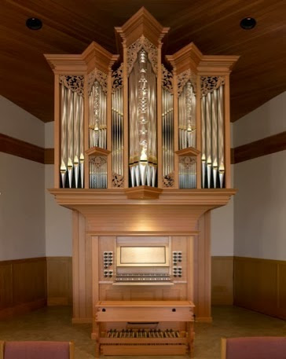

Personal Interests
I want to do quality work which makes peoples lives easier and happier.
Outside of Engineering, I love Latin and Classics. I have translated selections of Ovid's Metamorphoses, Vergil's Aeneid, Caesar's De Bello Gallico, and Apuleius's Metamorposis. In the future I hope to focus more on the period of Late Antiquity, and translate works in Medieval Latin. In the past I have done work with Latin Epigraphy, and finding new ways of presenting Latin texts which make them accessible for people outside the field. This took the form of a number of texts presented using Genius.com's annotation platform, utilizing their format of highlighted annotations to present the text, its physical inscription, its translation, and context simultaneously in a concise way. One example of a text I worked with is linked here, while everything I worked on is collected here.
I also play piano and organ, on the Paul Fritt's organ at St. Alban's church in Tucson (seen here, it's so pretty). I enjoy many types of old music, especially the Child Ballads, and old hymnals like the Sacred Harp.